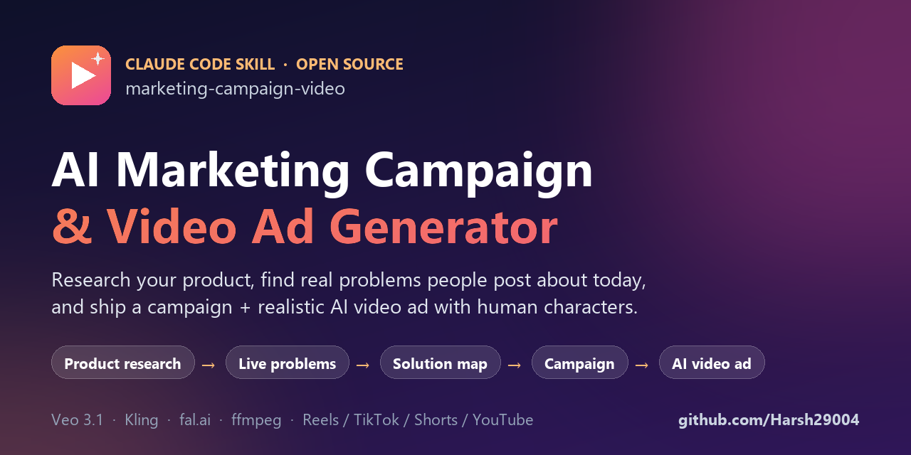

Research your product, find the real problems people are posting about today, and generate a complete marketing campaign plus a realistic AI video ad with human characters for Reels, TikTok, YouTube Shorts and LinkedIn, all from one prompt.

Site, app-store listing, docs and competitors. Every claim is sourced.
Reddit, reviews, forums and news. Real pain points with dates and links.
Pain × Frequency × Fit scoring picks the 3 strongest ad angles.
Big idea, hooks, Meta, TikTok, Google and LinkedIn copy, tests and KPIs.
Character bible → Veo 3.1 / Kling clips → ffmpeg final cut with captions.
In Claude Code:
/plugin marketplace add Harsh29004/claude-ai-video-ad-generator /plugin install marketing-campaign-video@harsh29004-skills
Or copy the skill folder:
git clone https://github.com/Harsh29004/claude-ai-video-ad-generator.git cp -r claude-ai-video-ad-generator/skills/marketing-campaign-video ~/.claude/skills/
Then just ask: "Make a marketing campaign and a Reels video ad with real-looking people for my app."
Each character is written once and reused word for word in every shot, so the same face holds across cuts.
Handheld phone framing, real light, lived-in sets, natural skin, and lip-synced dialogue in your audience's language.
AI never fakes your UI. Your real screenshots are shown with a smooth zoom.
Dry-run cost estimate, a hook-shot look check, cached clips and resumable jobs.
Install the skill, add a fal.ai API key, and ask Claude to make a video ad for your product. It writes the script and character bible, generates clips with Veo 3.1 or Kling, and assembles the final MP4 with captions and your real app screenshots.
The skill is free and MIT-licensed. Video generation is paid per second by fal.ai (about $8 for a 20-second Veo 3.1 ad). Without a key you get a free prompt pack for any video tool.
Yes. The default is 9:16 vertical, 20–30 seconds, with captions. 16:9, 1:1 and 4:5 are supported too.
As of Nov 2026, Veo 3.1 gives the most realistic people with native dialogue; Kling v3 is strong for longer shots and image-to-video consistency.
Characters are fictional, never fake testimonials, every claim is sourced, and an "AI-generated dramatization" label is on by default.